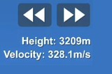
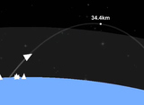
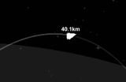
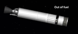
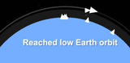

Como chegar a órbita no Spaceflight Simulator
Chegar a órbita pode ser uma missão muito difícil para iniciantes, se esse é seu caso, seus problemas acabaram! Com apenas 2 passos, você vai aprender a chegar a órbita. Caso queira uma blueprint, você pode fazer o download dessa aqui que fiz exatamente para isso: ver blueprint.
1 - Lançar!
Lance seu foguete e logo após isso, comece a incliná-lo para a direita. Para saber a inclinação correta para a altura atual, olhe ao lado superior esquerdo, abaixo do botão "map".

Fique de olho na velocidade, enquanto estiver abaixo de 10 km, mantenha a velocidade menor do que 350 m/s, assim você economiza mais combustível.
Acelere até que o topo da trajetória esteja fora da atmosfera, se possível, faça uma pequena margem.
2 - Orbitando
Para começar a fazer a órbita, você deve primeiro chegar ao apoastro, para dai começar a acelerar e completar a órbita.
Eu recomendo que você sempre deixe o apoastro na frente do foguete, para isso, acelere um pouco inclinado para cima.
Caso o combustível acabe, solte o primeiro estágio e acione o segundo para continuar acelerando.
Continue acelerando até aparecer o aviso "Reached low Earth orbit", quer dizer que você fez uma órbita baixa no planeta Terra.
A órbita não precisa ser perfeita, o que importa é que você conseguiu fazer e ganhou experiência para depois criar órbitas melhores.